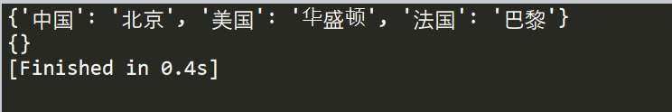

原文连接:https://www.cnblogs.com/lyy135146/p/11772998.html
Python字典类型
今天将会介绍一种在python中十分常见的组合数据类型——字典
通过一些实例来理解字典中的常规操作
什么是字典类型？
列表中查找是通过整数的索引（元素在列表中的序号）来实现查找功能。
但很多应用程序需要更加灵活的查找方式，即表示索引的键和对应的值组成。
比如说：“用户名”查找“手机号”，“学号”查找“学院班级”等等
通过任意键信息查找一组数据中值信息的过程叫“映射”
Python语言中，通过字典来实现映射。
简单理解为，字典为处理信息与信息相对应映射关系的组合数据类型。
字典类型操作
创建一个字典，内容为国家与首都的映射，并添加中国、美国、法国为例
#第一中添加方式
d={"中国":"北京","美国":"华盛顿"}
#第二种添加方式
d["法国"]="巴黎"
print(d)
这里需要注意一点，字典和集合 一样具有无序性，所以返回结果可能和输入顺序有所差别
字典类型主要结构为 ：键对应值；
在上例中，中国、美国、法国就相当于键，北京、华盛顿、巴黎属于值。
1.keys()
函数作用为返回所有“键”信息，也就是返回“中国、美国、法国”，不需要传入任何参数，使用方法如下：
d={"中国":"北京","美国":"华盛顿","法国":"巴黎"}
print(d.keys())
结果如下所示：

提示：可以将结果以列表的方式输入，只需要加入list()转换一下
2.values()
与keys()函数作用相似，作用为返回字典的值信息，也就是返回“北京、华盛顿、巴黎”，同样不需要参数，使用方法如下
d={"中国":"北京","美国":"华盛顿","法国":"巴黎"}
print(d.values())
结果如下所示：
3.items()
其主要作用为返回字典所有的键值对，看起来和直接打印字典本身差距不大，那专门来对比下效果：
d={"中国":"北京","美国":"华盛顿","法国":"巴黎"}
#直接打印
print(d)
#打印键值对
print(d.items())
效果如下：
很明显，通过items()打印键值对，键值对会通过（）来表示相关关系
4.get(<key>,<default>)
get()函数为判断函数，判断键是否有对应的值，若对应值存在 则返回对应值，若不存在则返回参数值，若未输入参数值，默认为none
举例子：输入键——中国，存在值——北京，则返回“北京”，输入键——泰国，不存在值，则返回none
d={"中国":"北京","美国":"华盛顿","法国":"巴黎"}
# 键中国有对应值，返回北京
print(d.get("中国"))
# 键泰国无对应值、无传入默认值，返回none
print(d.get("泰国"))
# 键意大利无对应值，有传入默认值"字典中无此数据" 返回默认值"字典中无此数据"
print(d.get("意大利","字典中无此数据"))
结果如下:
5.pop(<key>,<default>)
pop()函数与get()相似，使用方法相同，但是，pop()函数在get()的基础上，多加了一步，若键存在则在返回相应值的同时删除对应键，若不存在同get ()
d={"中国":"北京","美国":"华盛顿","法国":"巴黎"}
print(d)
print(d.pop("法国"))
print(d)
为效果明显,先打印原字典,通过pop删除后再打印字典,如下图所示,法国的键值对消失不见()
6.popitem()
函数作用为,随机从字典中选取一个键值对,并且以元组(key,walue)的形式返回
d={"中国":"北京","美国":"华盛顿","法国":"巴黎"}
print(d.popitem())
7.clear()
如同英文直译一样, clear()的作用为删除所有的键值对,也就是清空字典内部所有数据
d={"中国":"北京","美国":"华盛顿","法国":"巴黎"}
print(d)
d.clear()
print(d)
结果如下:

8.del<d>[<key>]
操作为传入键,删除对应的键值对.
d={"中国":"北京","美国":"华盛顿","法国":"巴黎"}
print(d)
del d["法国"]
print(d)
结果为：
9<key>in<d>
属于判断函数，若键在字典中为则返回true 否则返回false
d={"中国":"北京","美国":"华盛顿","法国":"巴黎"}
print("美国" -in d)
字典实战演练
例子1
D={“张三”：88，“李四”：90，“王五”：73，“赵六”:82}
1.字典中添加键值对“钱七”：90
D={"张三":88,"李四":90,"王五":73,"赵六":82}
D["钱七"]=90
print(D)
2.修改王五的信息为93
D={"张三":88,"李四":90,"王五":73,"赵六":82}
D["王五"]=93
print(D)
3.删除赵六对应的键值对
D={"张三":88,"李四":90,"王五":73,"赵六":82}
D.pop("赵六")
print(D)
例子2：
输入一串字符串，统计每一个字母出现的次数
s=input("输入：")
d={}
for i in s:
if i not in d :
d[i]=1
else:
d[i]=d[i]+1
print(d)